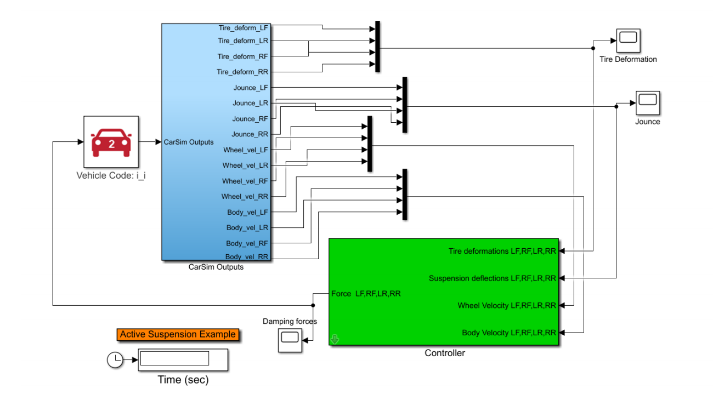
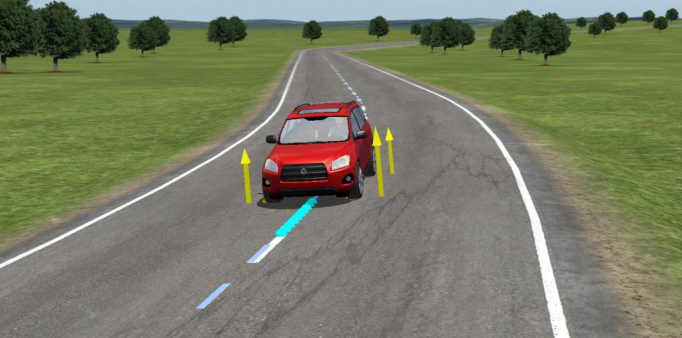
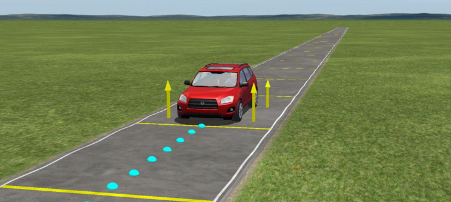
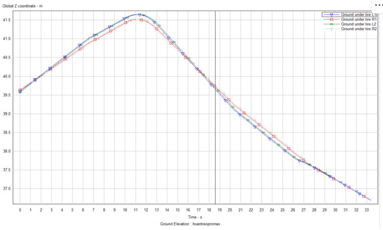
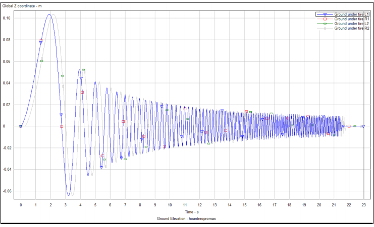

Overview
This team project models and simulates an active vehicle suspension system to study ride comfort and vehicle stability. A quarter-car suspension model and a full-vehicle CarSim model are connected with MATLAB/Simulink controllers.
Methodology
- Establish a passive suspension baseline
- Model and compare proportional (P), proportional-integral (PI), and proportional-integral-derivative (PID) control
- Co-simulate the controller with CarSim vehicle dynamics
- Evaluate cornering, bump, and random-road scenarios
- Review body acceleration, suspension and tire response, wheel velocity, and damper forces
System Architecture

Project Report
The report documents the suspension model, controller design, CarSim and Simulink setup, and simulation comparisons.
Open Report (PDF) Download PDF ↓Simulation Gallery




Results
In the quarter-car simulations, all three controllers improved the response compared with the uncontrolled suspension. PID provided the most stable response among P, PI, and PID: after a 10 cm bump, the reported body-motion amplitude was about 0.05 m and settled in roughly 3 seconds. Under random road input, the report describes PID oscillations of about 0.1 m, compared with about 0.15 m for P and PI. The CarSim co-simulation also compared controlled and uncontrolled vehicle behavior during cornering, bump-road, and random-road scenarios. The report notes that the CarSim setup still had modeling errors, so those full-vehicle comparisons should be read as simulation findings rather than physical vehicle test results.